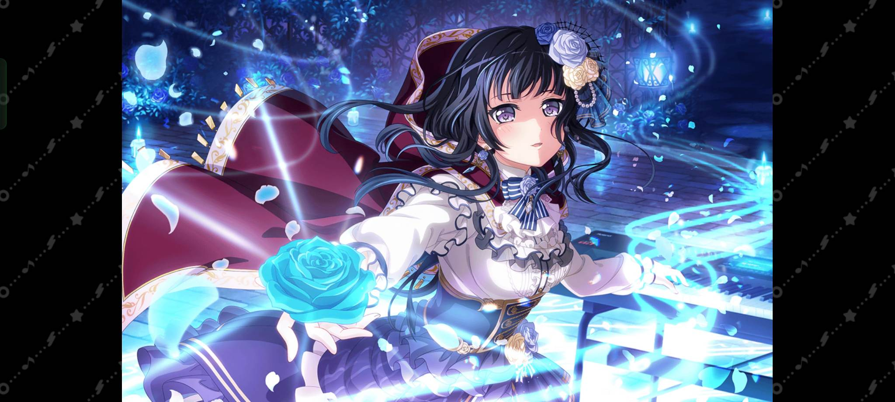

Rinko jest cennym członkiem roseli, co jest w niej na tyle wyjątkowego że jest godna bycia członkiem najlepszeo zespołu? Co bardzo ważne Rinko przyjaźni się z Ako, kontakty są bardzo ważne, a dzięki licznym interakcją z najwspanialszą Ako widz też bardziej ceni Rinko. Pomimo swojej nieśmiałości przełamuje się żeby stawać się bardziej otwartą, jej rozwój jest poruszający. Poświęca się swoim pasją, tu muzyce w roseli oraz graniu z Ako co chwalebnie daje czas antenowy Ako. Wszystkie te cechy pozwalają Rinko zostać najlepszym klawiszowcem(?) świata i okolic. Zainstaluj grę!
